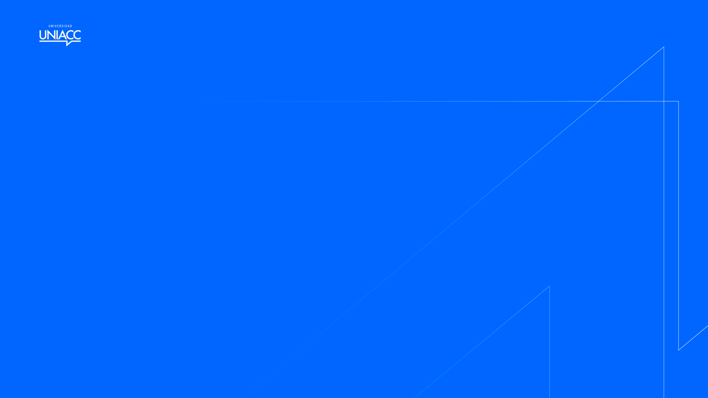

0%


Transformamos asignaturas, diplomados y posgrados en ecosistemas de aprendizaje interactivos bajo estándares internacionales e-learning y metodologías ágiles.
Selección de proyectos de innovación académica, aulas virtuales Moodle y producciones multimedia desarrolladas para UNIACC y asociados.
Explora los pilares de la Dirección de Ambientes Virtuales de Aprendizaje (DADVA) y su enfoque de aseguramiento de la calidad formativa.
La Dirección de Ambientes Virtuales de Aprendizaje tiene como misión liderar el diseño, desarrollo y mejora continua de experiencias formativas en modalidades online y semipresencial, articulando innovación pedagógica, tecnología para el aprendizaje y criterios de aseguramiento de la calidad.
Desde un enfoque centrado en el estudiantado, la DADVA impulsa la implementación del modelo educativo institucional mediante procesos tecnopedagógicos que integran metodologías activas, principios de accesibilidad e inclusión, estándares internacionales de calidad en e-learning (OLC) y herramientas digitales (incluyendo la IA).
Garantizar la aplicación planificada y estratégica del diseño tecnológico y pedagógico en la construcción de aulas y experiencias dentro del Ambiente Virtual de Aprendizaje (e-campus).
Trabajamos bajo estándares de calidad e-learning, el correcto alineamiento curricular y la innovación en los recursos, evaluaciones y herramientas de retroalimentación, contribuyendo a una formación flexible, rigurosa y coherente con los perfiles de egreso, la experiencia estudiantil exitosa y la transformación educativa en UNIACC.
Como equipo nos vemos enfrentados a muchos hitos y sucesos estratégicos de alta relevancia institucional, requiriendo articulación y rapidez de respuesta.
Es primordial que podamos organizar nuestro trabajo de manera planificada y colaborativa, disponiendo de flujos ágiles para apoyar a quienes lideran las iniciativas de innovación docente, facultades y áreas de gestión académica.

Evaluamos el perfil del estudiante, las competencias declaradas en el programa y los requerimientos tecnológicos para sentar bases sólidas.
Estructuramos las rutas de aprendizaje bajo el modelo ASSURE, alineando constructivamente resultados, microactividades y evaluación.
Nuestra factoría multimedia crea objetos virtuales interactivos, podcasts, cápsulas de video y recursos editoriales de alto estándar.
Desplegamos todo el ecosistema digital en Moodle, asegurando altos estándares de accesibilidad (WCA), responsividad y usabilidad (UX/UI).
Cursos desarrollados
Estudiantes impactados en promedio
Trabajo promedio por asignatura
Profesionales en el equipo